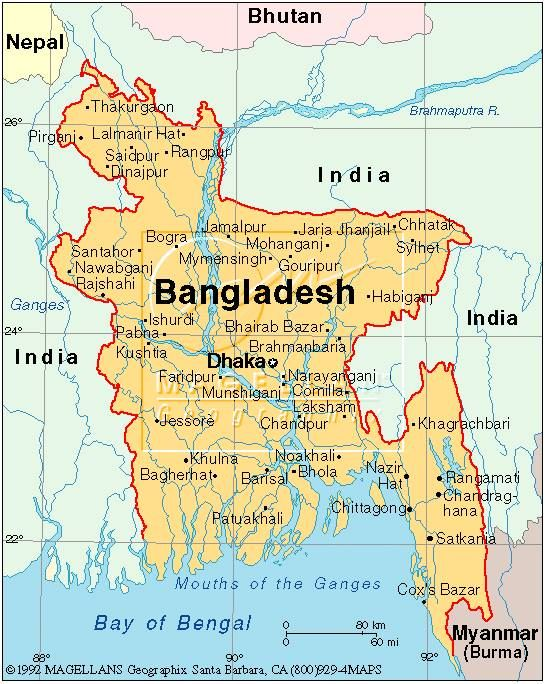

The word Bangladesh means “the people of Bengal” in the local Bangla language. The country's official name is the People’s Republic of Bangladesh. With a total of 156.6 inhabitants, Bangladesh’s population is ranked 8th in the world. Bangladesh has six seasons instead of four. It has grismo (summer), barsha (rainy season), sharat (autumn), hemanto (cool season), sheet (winter), and bashonto (spring). The Bay of Bengal, bounded by India, Bangladesh, Myanmar, Maldives, and Sri Lanka, is the biggest bay in the world.
The national animal of Bangladesh is the Royal bengal tiger. It has a roar that can be heard up to 3 km away. Almost half of the Bangladeshi population (45%) are farmers. Farming makes up 18% of the nation’s GDP. The capital of Bangladesh is Dhaka. The city was founded in 1608 CE and it has a population of 17 million. It is referred to as the City of Mosques.
The Cox Bazaar is the longest sea beach in the world, covering 125km. The people of Bangladesh rarely smile because they consider frequent smiling to be a sign of immaturity. Despite widespread farming in Bangladesh, the biggest exports in the country come from the garment industry. More than 2,000 periodicals and daily newspapers are published in Bangladesh, despite the country’s readership standing at only 15%.
Bangladesh has the world’s largest river and the world’s largest mangrove. The currency of Bangladesh is the Bangladeshi taka, which means ‘currency’ in Bengali. Bangladesh has the third largest Muslim population in the world after Indonesia and Pakistan. In Bangladesh, the left hand is considered to be unclean. The right hand is used when eating, passing food, or passing business cards.